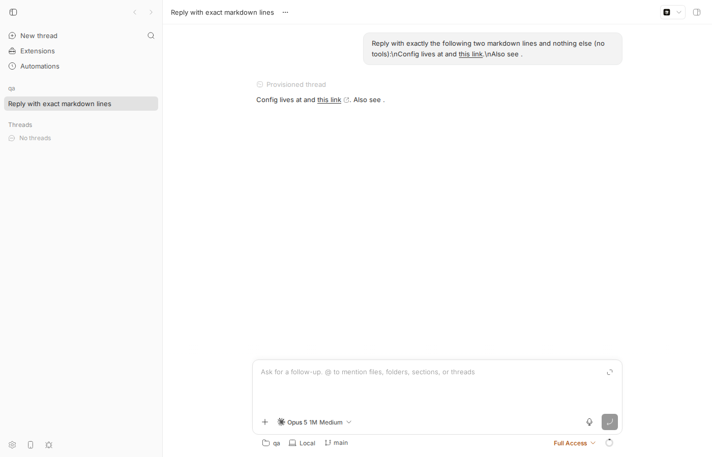
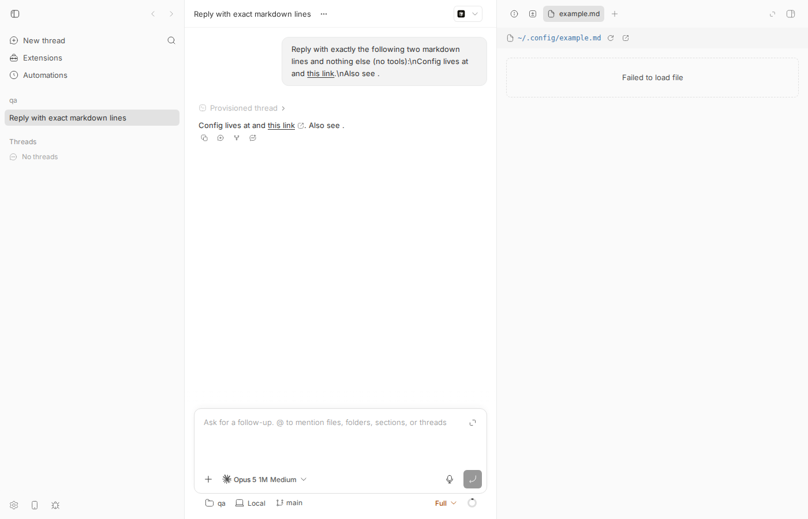
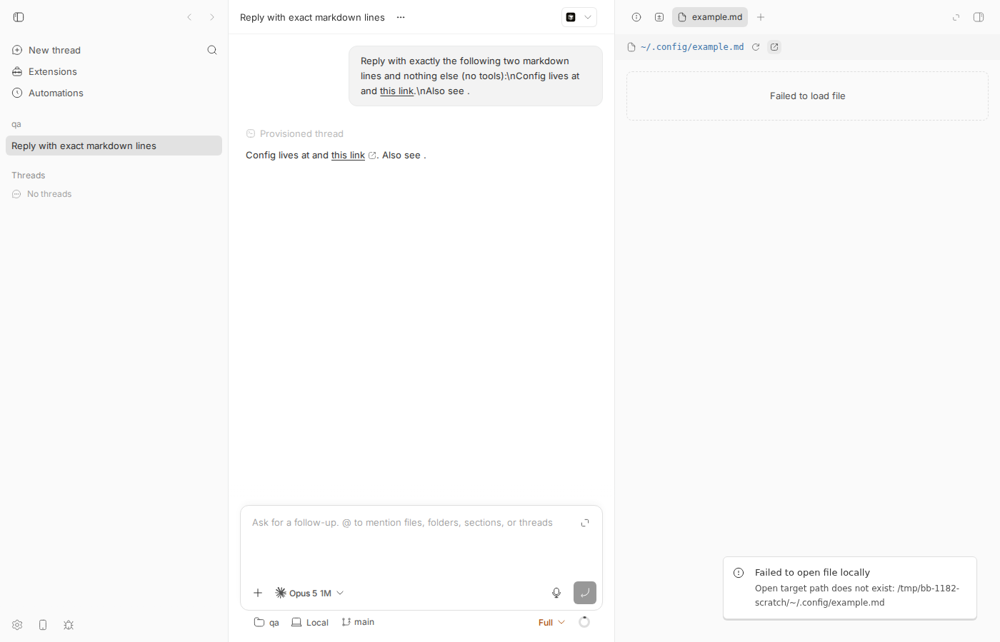
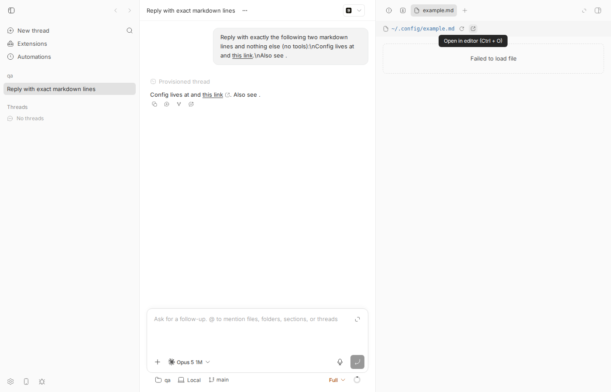
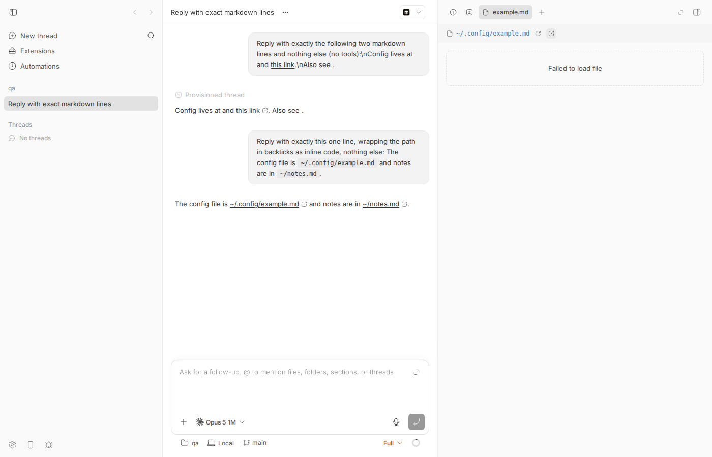
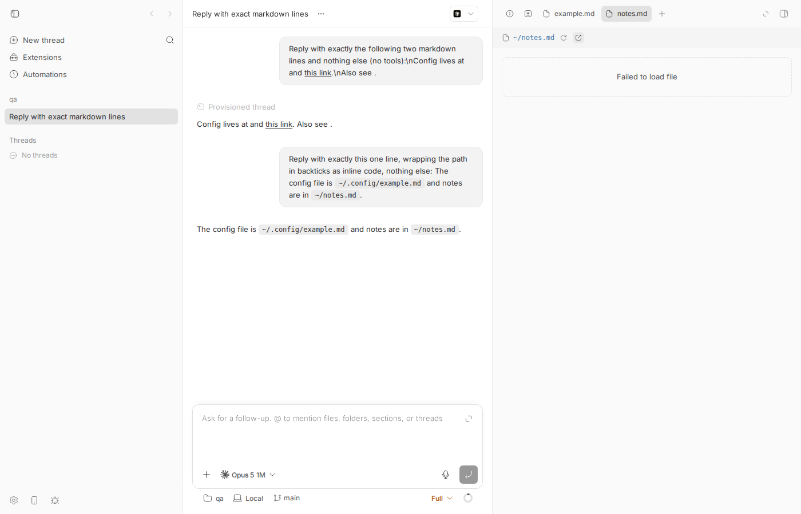

#1182 · Chat links starting with ~/ resolve against the project root
TL;DR
Plain-language framing. When an agent's reply in a bb thread contains a file path, the app turns it into a clickable link that opens the file in the side panel. Paths are either absolute (/home/me/x.md) or relative to the workspace (src/x.md → <workspace>/src/x.md). Shell-style home paths (~/.config/example.md) are neither, but the renderer's relative-link resolver has no rule for them.
What the user sees: an assistant message with `~/.config/example.md` (inline code ending in .md) or [text](~/.config/example.md) renders as a local-file link with the external-link icon. Clicking it opens a workspace file tab titled ~/.config/example.md that says Failed to load file; pressing Open in editor shows the toast "Failed to open file locally — Open target path does not exist: <workspace>/~/.config/example.md".
What is actually wrong: resolveRelativeLocalFileHref in apps/app/src/components/ui/markdown-local-file-link.ts rejects absolute paths, fragments, queries and URI schemes, and then treats everything else as workspace-relative and string-joins it onto the workspace root. ~/.config/example.md therefore becomes /tmp/bb-1182-scratch/~/.config/example.md. Because that string is under the workspace root, every later containment check passes and the app happily opens a workspace file tab for a directory literally named ~. The report's description of the cause is accurate. Not fixed on origin/main as of today.
Claims vs findings
| Claim | Status | Evidence |
|---|---|---|
A chat message containing ~/.config/example.md renders as a clickable link | Verified (with a nuance) | Only for assistant messages, and only when the path is (a) inline code ending in .md/.markdown, or (b) an explicit markdown link [t](~/…). Bare unformatted text is not autolinked; user messages are not linkified. Screenshot 1182-inline-code-open-in-editor.png shows both `~/.config/example.md` and `~/notes.md` underlined with the link icon; DOM hrefs were file:///tmp/bb-1182-scratch/~/.config/example.md and file:///tmp/bb-1182-scratch/~/notes.md. |
| Clicking opens a file tab in the secondary panel | Verified | Tab example.md / notes.md opens with path label ~/.config/example.md and body Failed to load file (1182-after-click.png). |
Open in editor fails with <project root>/~/.config/example.md | Verified | Toast: Failed to open file locally · Open target path does not exist: /tmp/bb-1182-scratch/~/.config/example.md (1182-open-in-editor.png). Message originates in packages/local-open-targets/src/index.ts:978 (requireOpenablePath) on the host daemon. |
resolveRelativeLocalFileHref treats every non-absolute href as workspace-relative and does not handle ~/ | Verified | Rejection list at L294–L305 has no tilde case; join at L320–L323. Unit test at the exact function fails on base with expected '/Users/me/bb/~/.config/example.md' to be null. |
Result passes isAbsoluteFilePathWithinRoot, so resolveThreadLocalFileLink classifies it as a workspace file | Verified | Test prints -> workspace link: { path: '/Users/me/bb/~/.config/example.md' }; in the app the tab is a workspace tab (relative label ~/.config/example.md). |
| No tilde expansion exists in the renderer link code | Verified | grep -n '~' apps/app/src/components/ui/markdown-local-file-link.ts finds nothing; the renderer receives no home-directory value. |
(Comment) Rejecting decoded ~/ "also needs to reject the percent-encoded forms, otherwise %7E/ still reaches the join" | Refuted as stated | resolveRelativeLocalFileHref calls safeDecodeURIComponent(href) before the checks (L292–L293), so a check on the decoded parsedHref.path already covers %7E/. My test includes %7E/.config/example.md: it resolves to the same buggy /Users/me/bb/~/.config/example.md today, and is rejected by the one-line decoded check in the proposed fix. Only a double-encoded %257E/ survives one decode, and that yields the harmless literal <root>/%7E/…, not a tilde path. |
Environment
- bb
16ceb3a540f81c1189efaffb27a39b1d9443abf5(main), worktree/home/USER/projects/bb/.claude/worktrees/wf_242c3e11-a10-25.git log 16ceb3a54..origin/main -- apps/app/src/components/ui/markdown-local-file-link.tsis empty (not fixed upstream). - Linux 7.0.0-29-generic x86_64, Node v24.18.0, Chromium (Playwright 1208, headless) via
dev-browser. - Provider used for the assistant message:
claude-code(Claude Code CLI 2.1.234, model Opus 5). - Dev instance: App
http://localhost:17374, Serverhttp://localhost:25374, Host daemon127.0.0.1:33374, data dir/home/USER/.bb-dev/projects-bb-.claude-worktrees-wf_242c3e11-a10-25-504a2ca64e9b. Projectproj_xfhduummc3on/tmp/bb-1182-scratch, threadthr_em7hmw2zzh.
Minimal reproduction
A. Unit test at the exact code path (fails on base)
File: 1182/repro/markdown-local-file-link.issue-1182.test.ts (copy to apps/app/src/components/ui/). Output: 1182/repro/vitest-output.txt.
cd apps/app cp /tmp/bb-reports/issues/1182/repro/markdown-local-file-link.issue-1182.test.ts src/components/ui/ pnpm exec vitest run src/components/ui/markdown-local-file-link.issue-1182.test.ts
import { describe, expect, it } from "vitest";
import {
parseLocalFileHref,
resolveRelativeLocalFileHref,
} from "./markdown-local-file-link";
// Repro for get-bb/bb#1182: a chat link whose href starts with `~/` is treated
// as workspace-relative and joined onto the workspace root.
const workspaceRootPath = "/Users/me/bb";
describe("issue #1182: home-relative hrefs", () => {
it.each([
["~"],
["~/.config/example.md"],
["%7E/.config/example.md"],
["~/.config/example.md:12"],
["~/notes.md#L3-L5"],
["~alice/notes.md"],
])("leaves %s as plain text (not a workspace file)", (href) => {
const resolved = resolveRelativeLocalFileHref({
baseDir: workspaceRootPath,
href,
rootPath: workspaceRootPath,
});
// BUG on 16ceb3a54: this returns "/Users/me/bb/~/.config/example.md"
expect(resolved).toBeNull();
});
// Guard against over-rejecting: a file whose *name* merely starts with `~`
// is a legitimate relative path and must stay a workspace file. These pass
// on 16ceb3a54 and must keep passing after the fix.
it.each([
["~notes.md", "/Users/me/bb/~notes.md"],
["~$report.docx", "/Users/me/bb/~$report.docx"],
["~notes.md:3", "/Users/me/bb/~notes.md:3"],
["docs/~draft.md", "/Users/me/bb/docs/~draft.md"],
])("still resolves %s as a workspace file", (href, expected) => {
expect(
resolveRelativeLocalFileHref({
baseDir: workspaceRootPath,
href,
rootPath: workspaceRootPath,
}),
).toBe(expected);
});
it("documents the actual (buggy) behaviour on 16ceb3a54", () => {
const resolved = resolveRelativeLocalFileHref({
baseDir: workspaceRootPath,
href: "~/.config/example.md",
rootPath: workspaceRootPath,
});
// This is what the app currently produces; it then passes the
// "contained in root" check and opens a workspace file tab.
const link = parseLocalFileHref({
absoluteLinks: { kind: "contained", rootPath: workspaceRootPath },
href: resolved ?? "",
});
// eslint-disable-next-line no-console
console.log("resolved href:", resolved, "-> workspace link:", link);
expect(link?.path).not.toBe("/Users/me/bb/~/.config/example.md");
});
});
Expected: all 11 pass (tilde hrefs resolve to null, i.e. left as ordinary links; names that merely start with ~ still resolve). Actual on 16ceb3a54: 7 fail / 4 pass — the four "still resolves" guards pass on base (they exist to keep the fix from over-rejecting), every home-path case fails:
❯ src/components/ui/markdown-local-file-link.issue-1182.test.ts (11 tests | 7 failed)
× leaves ~ as plain text (not a workspace file)
→ expected '/Users/me/bb/~' to be null
× leaves ~/.config/example.md as plain text (not a workspace file)
→ expected '/Users/me/bb/~/.config/example.md' to be null
× leaves %7E/.config/example.md as plain text (not a workspace file)
→ expected '/Users/me/bb/~/.config/example.md' to be null
× leaves ~/.config/example.md:12 as plain text (not a workspace file)
→ expected '/Users/me/bb/~/.config/example.md:12' to be null
× leaves ~/notes.md#L3-L5 as plain text (not a workspace file)
→ expected '/Users/me/bb/~/notes.md#L3-L5' to be null
× leaves ~alice/notes.md as plain text (not a workspace file)
→ expected '/Users/me/bb/~alice/notes.md' to be null
✓ still resolves ~notes.md as a workspace file
✓ still resolves ~$report.docx as a workspace file
✓ still resolves ~notes.md:3 as a workspace file
✓ still resolves docs/~draft.md as a workspace file
× documents the actual (buggy) behaviour on 16ceb3a54
→ expected '/Users/me/bb/~/.config/example.md' not to be '/Users/me/bb/~/.config/example.md'
stdout | documents the actual (buggy) behaviour on 16ceb3a54
resolved href: /Users/me/bb/~/.config/example.md -> workspace link: { lineRange: null, path: '/Users/me/bb/~/.config/example.md' }
Test Files 1 failed (1)
Tests 7 failed | 4 passed (11)
B. Live repro in the app
- Start a dev instance and create a scratch project:
# run everything from the bb repo root of your worktree scripts/bb-dev-app current # prints App/Server/Host daemon URLs for YOUR worktree (ports differ per worktree) eval "$(scripts/bb-dev-app env)" # sets BB_SERVER_URL etc. to those values ( mkdir -p /tmp/bb-1182-scratch && cd /tmp/bb-1182-scratch && git init -q && echo "# scratch" > README.md && git add . && git -c user.email=a@b -c user.name=qa commit -qm init ) pnpm bb:dev machine list # note the host id (mine: host_7jfebaa4wr; the verifier's: host_ai8j9cyts3) curl -s -X POST $BB_SERVER_URL/api/v1/projects -H 'content-type: application/json' \ -d '{"name":"qa","source":{"type":"local_path","path":"/tmp/bb-1182-scratch","hostId":"<host id from machine list>"}}' # -> {"id":"proj_…", ...} (substitute this project id, and the thread id spawned below, in the following commands; # the ids/ports shown further down — proj_xfhduummc3, thr_em7hmw2zzh, :17374/:25374 — are from the author's instance) - Get an assistant message that contains tilde paths (a real turn; note: run the CLI via
node packages/scripts/dist/commands/run-cli.js, notpnpm bb:dev, so the shell does not eat the backticks; unsetBB_THREAD_IDif you are inside a bb thread):unset BB_THREAD_ID BB_ENVIRONMENT_ID BB_THREAD_STORAGE node packages/scripts/dist/commands/run-cli.js thread spawn --project proj_xfhduummc3 --provider claude-code --permission-mode full \ --prompt 'Reply with exactly the following line and nothing else: Config lives at [this link](~/.config/example.md).' node packages/scripts/dist/commands/run-cli.js thread tell thr_em7hmw2zzh \ 'Reply with exactly this one line, wrapping the path in backticks as inline code, nothing else: The config file is `~/.config/example.md` and notes are in `~/notes.md`.' node packages/scripts/dist/commands/run-cli.js thread wait thr_em7hmw2zzh node packages/scripts/dist/commands/run-cli.js thread output thr_em7hmw2zzh # The config file is `~/.config/example.md` and notes are in `~/notes.md`.
- Open
http://localhost:17374/projects/proj_xfhduummc3/threads/thr_em7hmw2zzh. Expected: tilde paths are plain text/plain code. Actual: they are underlined local-file links with the external-link icon (below). DOM check (browser-step4.js):[{"text":"this link","href":"file:///tmp/bb-1182-scratch/~/.config/example.md"}, {"text":"~/.config/example.md","href":"file:///tmp/bb-1182-scratch/~/.config/example.md"}, {"text":"~/notes.md","href":"file:///tmp/bb-1182-scratch/~/notes.md"}] - Click the link. Actual: a workspace file tab opens with path label
~/.config/example.mdand body Failed to load file. - Click Open in editor (external-link button in the tab header,
Ctrl+O). Actual: toast Failed to open file locally — Open target path does not exist: /tmp/bb-1182-scratch/~/.config/example.md.

[this link](~/.config/example.md) renders as a local-file link — note the small external-link icon after "this link", which the app only adds when it classified the href as a local file.
~/.config/example.md (a workspace-relative path whose first segment is a literal ~) and the body says "Failed to load file".
~ joined onto the workspace root.`~/.config/example.md` and `~/notes.md` in the assistant reply are links (the same paths in the user's message above are correctly not linkified). Clicking ~/notes.md and Open in editor gives "…does not exist: /tmp/bb-1182-scratch/~/notes.md".

`~/.config/example.md` and `~/notes.md` in the assistant reply are rendered as underlined links with the local-file icon.
~/.config/example.md). Note: the example.md / notes.md tabs still open in the right-hand panel are stale from steps 4–5 (they were opened before the fix and were not closed before capturing); with the fix applied nothing in the message is clickable as a workspace file, so no new tab can be opened.Root cause
The relative-link resolver has an allow-by-default shape: it enumerates things that are not workspace-relative and joins everything else. apps/app/src/components/ui/markdown-local-file-link.ts#L283-L336:
const decodedHref = safeDecodeURIComponent(href); // L292 — `%7E/` is already `~/` here
const parsedHref = parseLineSuffix(decodedHref);
if (
href.trim() !== href ||
decodedHref.trim() !== decodedHref ||
parsedHref === null ||
parsedHref.path.length === 0 ||
parsedHref.path.startsWith("/") || // absolute
parsedHref.path.startsWith("#") || // fragment
parsedHref.path.startsWith("?") || // query
URI_SCHEME_PATTERN.test(parsedHref.path) // scheme
) {
return null; // no `~` case
}
…
const joinedPath =
normalizedBaseDir === "/"
? `/${parsedHref.path}`
: `${normalizedBaseDir}/${parsedHref.path}`; // L320-323: "/tmp/bb-1182-scratch/~/.config/example.md"
const normalizedHrefPath = normalizeAbsoluteFilePath({ path: joinedPath });
if (normalizedHrefPath === null ||
!isAbsoluteFilePathWithinRoot({ candidatePath: normalizedHrefPath, rootPath: normalizedRootPath })) {
return null; // passes: it IS under the root
}
normalizeAbsoluteFilePath only collapses ./../duplicate slashes; a segment named ~ is an ordinary segment. So the joined string is "inside" the workspace and survives every downstream containment check. Why the symptom follows, surface by surface (all in apps/app):
- Where the resolver is wired for chat: assistant messages pass
relativeLinks: { baseDir: workspaceRootPath, rootPath: workspaceRootPath }— ConversationMessageContent.tsx#L565-L580. (Same wiring exists for plugin panels inlib/plugin-sdk-app-impl.tsx#L88and for markdown file previews viamarkdown-preview.tsx, wherebaseDiris the previewed file's directory — a README containing[x](~/foo.md)hits the same bug.) - Explicit link
[t](~/x): react-markdown'surlTransform(markdown-preview.tsx#L515-L560) rewrites the href to the joined absolute path;MarkdownAnchorthen treats it as a local file (file://anchor, icon, click handler). - Inline code
`~/x.md`:resolveInlineCodeMarkdownFileHref(markdown-preview.tsx#L568-L611) linkifies inline code that resolves to a.md/.markdownfile, which is why the report's.mdexample lights up while e.g.`~/.zshrc`would not. - Click → workspace tab:
resolveThreadLocalFileLink(thread-local-file-links.ts#L117-L145) sees the path is underworkspaceRootPathand returnsopen-workspace-pathwithrelativePath: "~/.config/example.md"— hence the tab label. - Open in editor: the host daemon
stats the joined path and throwspath_not_found— local-open-targets/src/index.ts#L974-L980. This layer is behaving correctly; it just gets a bogus path.
Deeper point. The renderer genuinely has no home directory to expand ~ against (the workspace may be on a remote machine, and no host-daemon field carries $HOME), so it cannot do better than "not a workspace file" without a protocol change. Option 2 in the issue (expand via host home) would need a new host payload field and a HOST_DAEMON_PROTOCOL_VERSION bump per AGENTS.md; option 1 is purely renderer-local. History: the resolver was added in 75327ea54 / e4040ab19 (2026-05/06) with no tilde case from the start; this is an omission, not a regression.
Proposed fix (first principles)
Reject shell-style home paths in resolveRelativeLocalFileHref after decoding, in the same guard clause as absolute paths. One helper + one condition; verified in this worktree (repro test goes 11/11 green, existing markdown-local-file-link.test.ts and markdown-preview.test.tsx still pass — 37 tests across the three files, turbo typecheck --filter=@bb/app clean, and the live app shows plain code / plain anchor — see last screenshot). Diff: 1182/repro/proposed-fix.diff (applies cleanly to 16ceb3a54 with git apply).
Correction (after verification): the first version of this report used /^~[^/]*(?:\/|$)/ and claimed it kept ~notes.md-style names linkified. That was wrong — [^/]* swallows the whole first segment and $ then always matches, so it was equivalent to /^~/. The regex below is the corrected one: it matches a bare ~, or a first segment starting with ~ that is followed by a slash (~/…, ~user/…), and nothing else. Table from node (verify/revise-regex.txt):
"~" true (rejected: home path) "~/x" true "~user/x.md" true "~foo/bar.md" true "~notes.md" false (kept: relative file name) "~$report.docx" false "~notes.md:3" false (line suffix is parsed off before the check anyway) "docs/~draft.md" false
+// Shell-style home paths (`~`, `~/x`, `~user/x`) are not workspace-relative.
+// The renderer has no home directory to expand them against, so leave them as
+// plain links instead of joining the literal `~` onto the workspace root.
+// Only a bare `~` or a first segment that starts with `~` and is followed by a
+// `/` counts; a plain file name that happens to start with `~` (for example
+// `~notes.md` or a `~$report.docx` lock file) is still a relative file. This
+// runs on the *decoded* href, so `%7E/x` is covered too.
+function isHomeRelativePath(path: string): boolean {
+ return /^~(?:[^/]*\/|$)/u.test(path);
+}
…
parsedHref.path.startsWith("/") ||
+ isHomeRelativePath(parsedHref.path) ||
parsedHref.path.startsWith("#") ||
Notes / what could go wrong:
- Match
~,~/…, and~user/…(what a shell would expand). Do not reject every path that merely starts with~:~$report.docx-style lock files or a file literally named~notes.mdare legitimate relative names. The corrected regex keeps them, and this is now tested: the repro file has four "still resolves … as a workspace file" cases (~notes.md,~$report.docx,~notes.md:3,docs/~draft.md) that pass both on base and with the fix. Trade-off:~foo/bar.md(a directory literally named~foo) is also rejected, because it is indistinguishable from a~user/path; that seems acceptable and is documented in the code comment. If maintainers prefer the blunter rule "anything starting with~", use/^~/and drop the four positive cases — either is fine, but the report should not claim one while shipping the other. - Because the check runs on the decoded path,
%7E/…is covered without extra code; the comment on the issue about needing separate percent-encoded handling only applies if someone puts the check before the decode. - Behaviour after the fix for
[t](~/x): it remains an ordinary anchor with a relative href, so a click navigates the new tab to<app-origin>/projects/…/~/x(a 404 route). That matches the issue's stated acceptable outcome ("bb leaves it as plain text") but is still a dead link; a follow-up could strip the anchor entirely for home paths. Inline code simply stops being linkified, which is the correct outcome. - Add the six negative
it.eachcases and the four positive ones from the repro file toapps/app/src/components/ui/markdown-local-file-link.test.tsunderdescribe("resolveRelativeLocalFileHref"). - If option 2 (expand to host home) is ever wanted, do it as a separate change: the daemon returns the raw home path, the server assembles routing, and bump
HOST_DAEMON_PROTOCOL_VERSION.
Related issues
- #1504 (PR, closed): "[issue sweep] Reject home-relative markdown links" — an agent-opened implementation of option 1, closed by @OWNER in favour of the assignee's PR. Not reviewed here since it is closed; the issue itself is assigned to @arunsathiya with maintainer approval for option 1.
- #1634: "Add a Finder action beside local file links" — same local-file-link surface.
Appendix
Files
repro test,vitest output on base,proposed-fix.diff- Browser scripts (dev-browser, headless):
step1 (load thread),step3 (click link + Open in editor),step4 (inline-code variant),step5 (with fix) - Screenshots:
assets/1182-thread-before.png,assets/1182-after-click.png,assets/1182-hover-open-in-editor.png,assets/1182-open-in-editor.png,assets/1182-inline-code-links.png,assets/1182-inline-code-open-in-editor.png,assets/1182-with-fix.png
Commands run
pnpm install --frozen-lockfile --prefer-offline
pnpm exec turbo run build
git fetch origin main; git log 16ceb3a54..origin/main --oneline -- apps/app/src/components/ui/markdown-local-file-link.ts # (empty)
git checkout 16ceb3a54 # worktree had drifted to a108fa7ef (5 unrelated commits); pinned back to base
cd apps/app && pnpm exec vitest run src/components/ui/markdown-local-file-link.issue-1182.test.ts --reporter=verbose
scripts/bb-dev-app current
export BB_SERVER_URL=http://localhost:25374 BB_HOST_DAEMON_PORT=33374
pnpm bb:dev machine list
curl -s -X POST $BB_SERVER_URL/api/v1/projects ... (see step B1)
node packages/scripts/dist/commands/run-cli.js thread spawn/tell/wait/output ... (see step B2)
dev-browser --browser bb1182b --headless --timeout 90 run /tmp/bb-reports/issues/1182/repro/browser-step{1,3,4,5-with-fix}.js
# with fix applied:
cd apps/app && pnpm exec vitest run src/components/ui/markdown-local-file-link.issue-1182.test.ts src/components/ui/markdown-local-file-link.test.ts src/components/ui/markdown-preview.test.tsx # 31 passed (first version of the repro test)
pnpm exec turbo run typecheck --filter=@bb/app # ok
git checkout apps/app/src/components/ui/markdown-local-file-link.ts # reverted; diff saved
pnpm dev:stop
# revision pass (after verifier findings), in worktree wf_6b6686dc-4c2-27 pinned to 16ceb3a54:
node -e '…regex table…' > /tmp/bb-reports/issues/1182/verify/revise-regex.txt
cd apps/app && pnpm exec vitest run src/components/ui/markdown-local-file-link.issue-1182.test.ts # base: 7 failed | 4 passed
git apply /tmp/bb-reports/issues/1182/repro/proposed-fix.diff
cd apps/app && pnpm exec vitest run …issue-1182.test.ts …markdown-local-file-link.test.ts …markdown-preview.test.tsx # 37 passed (verify/revise-vitest-fix.txt)
pnpm exec turbo run typecheck --filter=@bb/app # ok (verify/revise-typecheck.txt)
Raw: DOM link hrefs on base (step 3)
[
{ "text": "this link", "href": "~/.config/example.md" }, <- user's echoed prompt (not linkified: plain anchor)
{ "text": "this link", "href": "file:///tmp/bb-1182-scratch/~/.config/example.md" }, <- assistant message
{ "text": "~/.config/example.md", "href": "file:///tmp/bb-1182-scratch/~/.config/example.md" },
{ "text": "~/notes.md", "href": "file:///tmp/bb-1182-scratch/~/notes.md" }
]
toast text: "Failed to open file locally\nOpen target path does not exist: /tmp/bb-1182-scratch/~/notes.md"
Raw: DOM link hrefs with proposed fix (step 5)
[
{ "text": "this link", "href": "~/.config/example.md" },
{ "text": "this link", "href": "~/.config/example.md" }
]
Note on the CLI prompt in the first turn
The first spawn was sent through pnpm bb:dev thread spawn … --prompt '…`~/.config/example.md`…'; pnpm re-invokes through a shell, which performed command substitution on the backticks and stripped the inline code from the prompt (visible in the first user bubble). The explicit markdown link survived, which is what the first three screenshots exercise; the second turn (sent with run-cli.js directly) exercises the inline-code form.
Verification
An independent verifier followed this report in a fresh worktree at 16ceb3a54: (A) the unit test reproduced with the same assertions, and the fix diff applied cleanly and turned the suite green; (B) a live dev instance (App :14920 / Server :22920, project /tmp/bb-1182-verify-scratch, a real claude-code turn) showed the file:///tmp/bb-1182-verify-scratch/~/.config/example.md anchor, the "Failed to load file" tab, and the "Open target path does not exist" toast; all permalinked code excerpts matched the base commit and origin/main still lacks a fix. Verifier logs and screenshots: verify/vitest-base.txt, verify/vitest-fix.txt, verify/1182-verify-thread.png, verify/1182-verify-after-click.png, verify/1182-verify-open-in-editor.png.
Findings and what changed in this revision:
- Major — regex claim was false.
/^~[^/]*(?:\/|$)/rejected every href starting with~, contradicting the report's statement that~notes.md/~$report.docxstayed linkified. Fixed: the regex is now/^~(?:[^/]*\/|$)/(bare~, or~…/),repro/proposed-fix.diffwas regenerated, the repro test gained four positive "still resolves" cases plus~and~alice/notes.mdnegatives (11 tests: 7 fail on base, 11 pass with fix; 37 pass together with the two existing suites), typecheck re-run clean, and the Proposed-fix section documents the trade-off explicitly. - Minor — repro B step 1 not literally followable. Ports/host id/project id were the author's instance values and the
cdinto the scratch repo broke the followingpnpm bb:devcall. Fixed: the block now useseval "$(scripts/bb-dev-app env)", runs the scratchgit initin a subshell, and says to substitute your own host/project/thread ids. - Minor — screenshots. Added a caption note that the tabs visible in
1182-with-fix.pngare stale from the pre-fix steps; embedded the two previously unreferenced screenshots (1182-hover-open-in-editor.png,1182-inline-code-links.png).
The live-app screenshots were not re-taken for the corrected regex: the only behavioural difference between the two regexes is for names like ~notes.md (kept as workspace files, unchanged from base), and every ~/… case exercised in the browser is rejected identically by both, as the unit test shows.